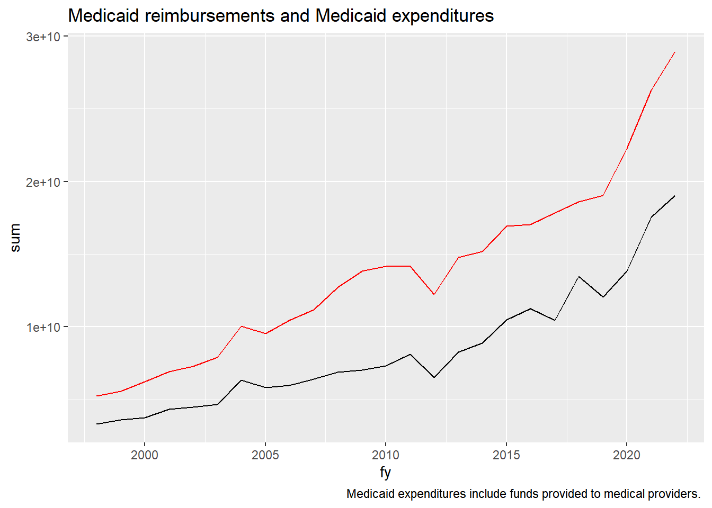

7.1 Federal Medicaid Reimbursements and Medicaid Costs
Code
medicaid_cost <- exp_temp %>%filter(agency=="478"& (appr_org=="01"| appr_org =="65"| appr_org=="88") & (object=="4900"| object=="4400")) %>%group_by(fy) %>%summarize(sum=sum(expenditure))med_reimburse <- rev_temp %>%filter(rev_type=="57"& agency=="478"& (source=="0618"|source=="2364"|source=="0660"|source=="1552"| source=="2306"| source=="2076"|source=="0676"|source=="0692")) %>%group_by(fy) %>%summarize(sum=sum(receipts))ggplot()+geom_line(data=medicaid_cost, aes(x=fy, y=sum), color ="red") +geom_line(data=med_reimburse, aes(x=fy, y = sum), color="black") +labs(title ="Medicaid reimbursements and Medicaid expenditures", caption ="Medicaid expenditures include funds provided to medical providers. ")

Medicaid.That portion of the Healthcare and Family Services (or Public Aid in earlier years, agency code 478) budget for Medical (appr_organization code 65) for awards and grants (object codes 4400 and 4900).
State CURE revenue will remain in the Medicaid category due to the nature of it being federal funds providing public health services and funding to locations that provide public services.
Uses same appropriation name of “HEALTHCARE PROVIDER RELIEF” and fund == 0793 and obj_seq_type == 49000000. So can defend the “mistake” of including healthcare provider relief as Medicaid expenditure.
Federal Medical Assistance Program (FMAP): in 1965. The FMAP formula compares the state per-capita income to the national per-capita income. There is no cap on the dollar amount that the federal government pays, so the more that a state spends the more that it receives. a maximum of 83%. States with a higher per-capita income receive lower FMAP funding but no less than 50%, and the states that have a lower per-capita income receive higher FMAP funding. Those that need more, get more.
Source Code
# Medicaid```{r warning = FALSE, message=FALSE}library(tidyverse)library(haven)library(formatR)library(lubridate)library(smooth)library(forecast)library(scales)library(kableExtra)library(ggplot2)library(readxl)library(tidyverse)library(data.table)library(quantmod)library(geofacet)library(janitor)knitr::opts_chunk$set(echo =TRUE, warning =FALSE, message =FALSE)exp_temp <-read_csv("exp_temp.csv")rev_temp <-read_csv("rev_temp.csv")```## Federal Medicaid Reimbursements and Medicaid Costs```{r}medicaid_cost <- exp_temp %>%filter(agency=="478"& (appr_org=="01"| appr_org =="65"| appr_org=="88") & (object=="4900"| object=="4400")) %>%group_by(fy) %>%summarize(sum=sum(expenditure))med_reimburse <- rev_temp %>%filter(rev_type=="57"& agency=="478"& (source=="0618"|source=="2364"|source=="0660"|source=="1552"| source=="2306"| source=="2076"|source=="0676"|source=="0692")) %>%group_by(fy) %>%summarize(sum=sum(receipts))ggplot()+geom_line(data=medicaid_cost, aes(x=fy, y=sum), color ="red") +geom_line(data=med_reimburse, aes(x=fy, y = sum), color="black") +labs(title ="Medicaid reimbursements and Medicaid expenditures", caption ="Medicaid expenditures include funds provided to medical providers. ")```**Medicaid.**That portion of the Healthcare and Family Services (or Public Aid in earlier years, agency code 478) budget for Medical (appr_organization code 65) for awards and grants (object codes 4400 and 4900).> State CURE revenue will remain in the Medicaid category due to the nature of it being federal funds providing public health services and funding to locations that provide public services.- Uses same appropriation name of "HEALTHCARE PROVIDER RELIEF" and fund == 0793 and obj_seq_type == 49000000. So can defend the "mistake" of including healthcare provider relief as Medicaid expenditure.```{r Medicaid-check, include = FALSE, eval=FALSE}medicaid_check <- exp_temp %>%filter(agency=="478"& (appr_org=="01"| appr_org =="65"| appr_org=="88") & (object=="4900"| object=="4400"))# This includes the State CURE fundmedicaid_check %>%group_by(fy) %>%summarize(sum =sum(expenditure)) %>%arrange(-fy) # looks good I think AWM# if we want state CURE as public health or other group number# exp_temp <- exp_temp %>% mutate(group = if_else(fund == "0324" & agency=="478" & appr_org == "65" & object=="4900", "478", as.character(group)))medicaid_check %>%filter(fy>2020) %>%group_by(wh_approp_name,fy) %>%summarize(sum=sum(expenditure)) %>%arrange(wh_approp_name)```Federal Medical Assistance Program (FMAP): in 1965. The FMAP formula compares the state per-capita income to the national per-capita income. There is no cap on the dollar amount that the federal government pays, so the more that a state spends the more that it receives. a maximum of 83%. States with a higher per-capita income receive lower FMAP funding but no less than 50%, and the states that have a lower per-capita income receive higher FMAP funding. Those that need more, get more.